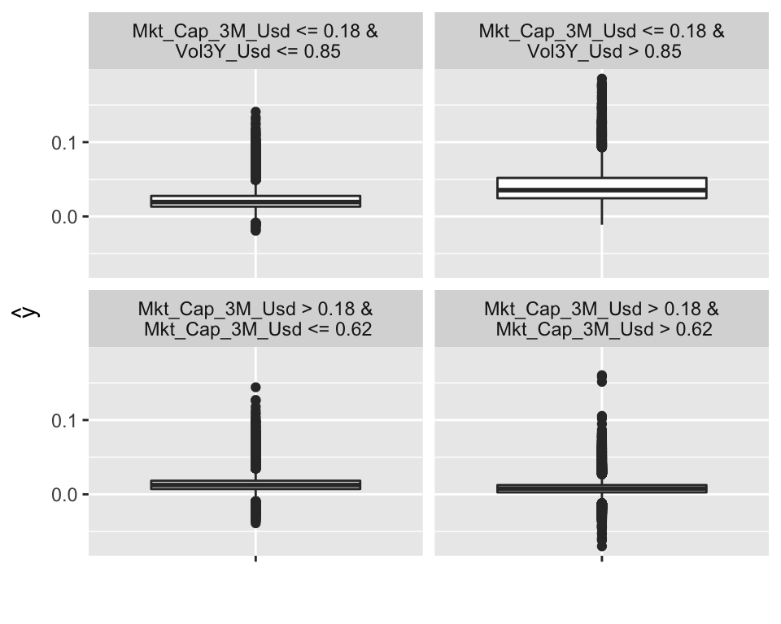
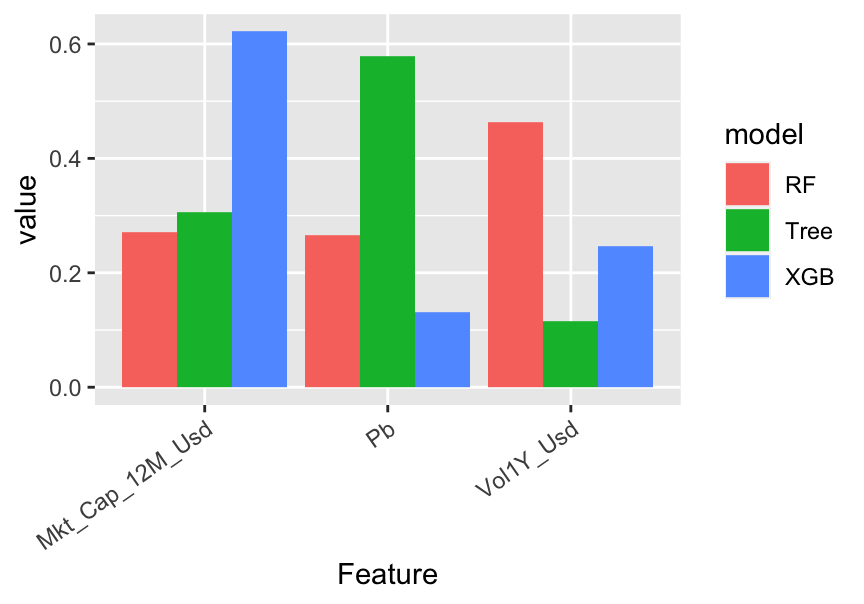
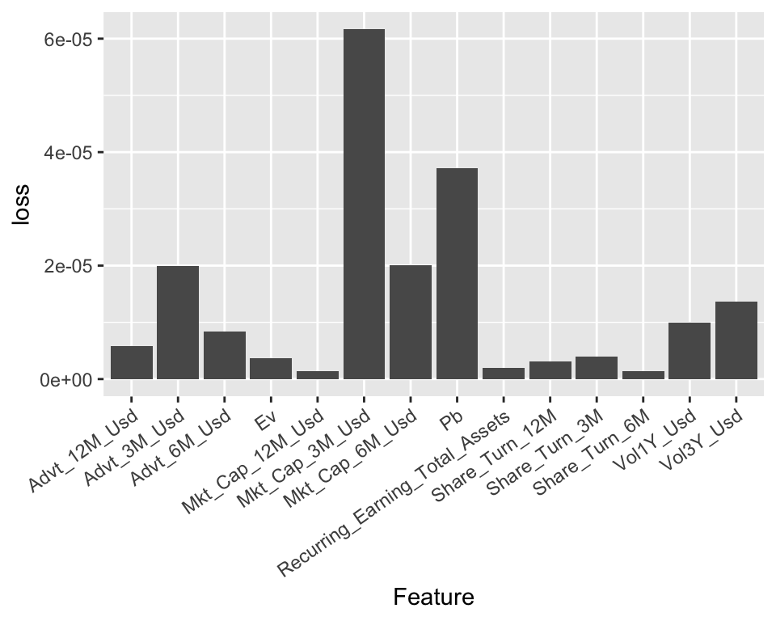
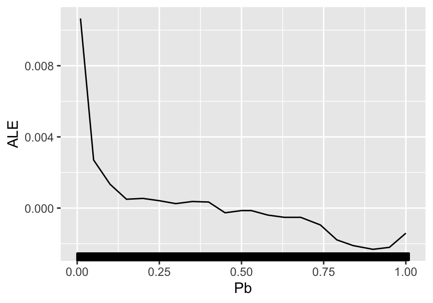
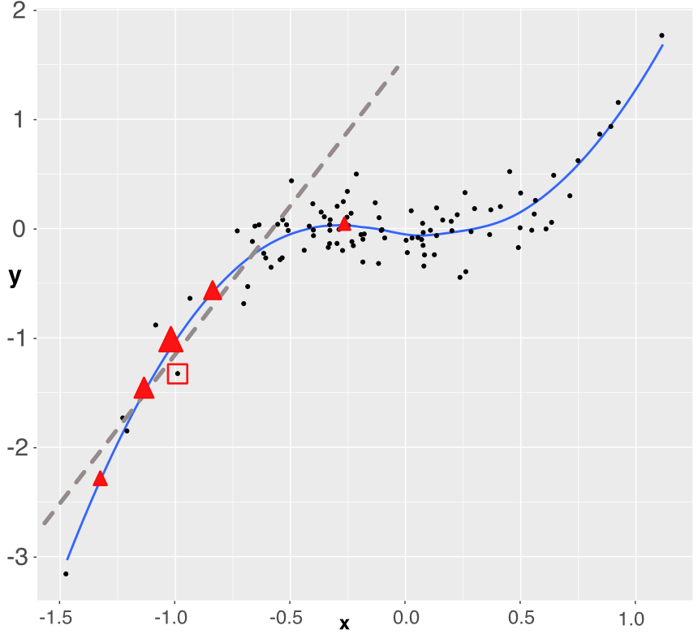
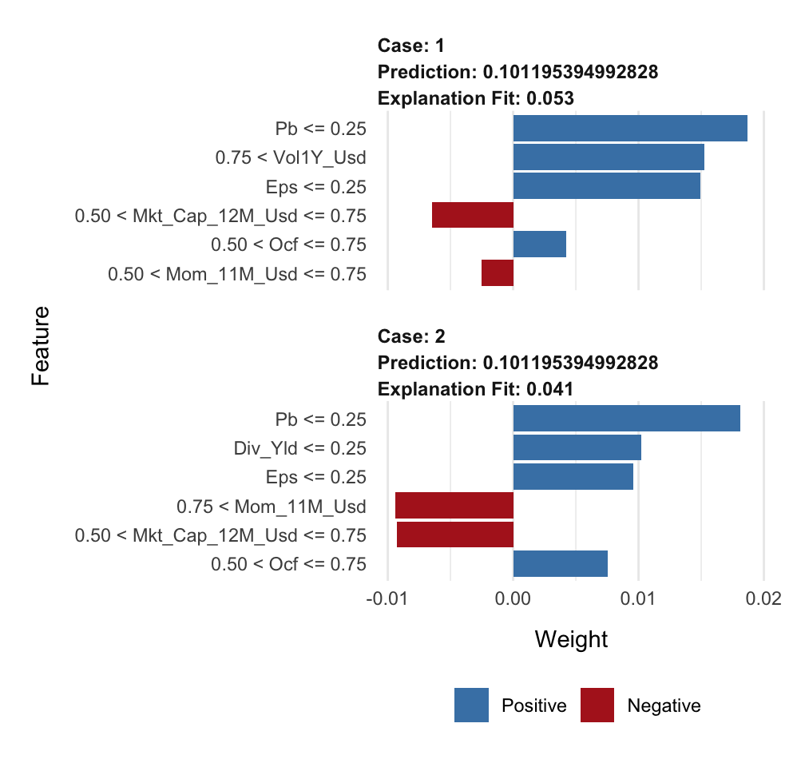
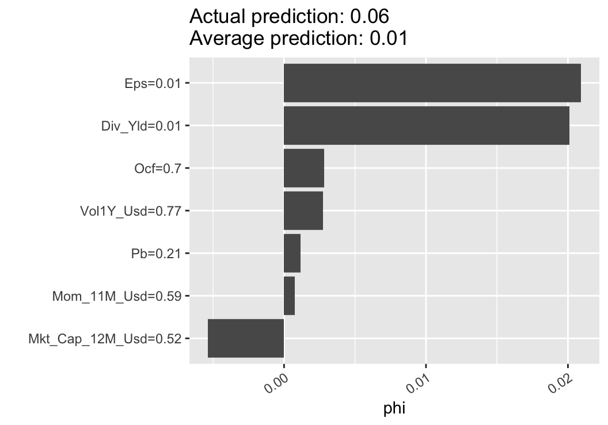
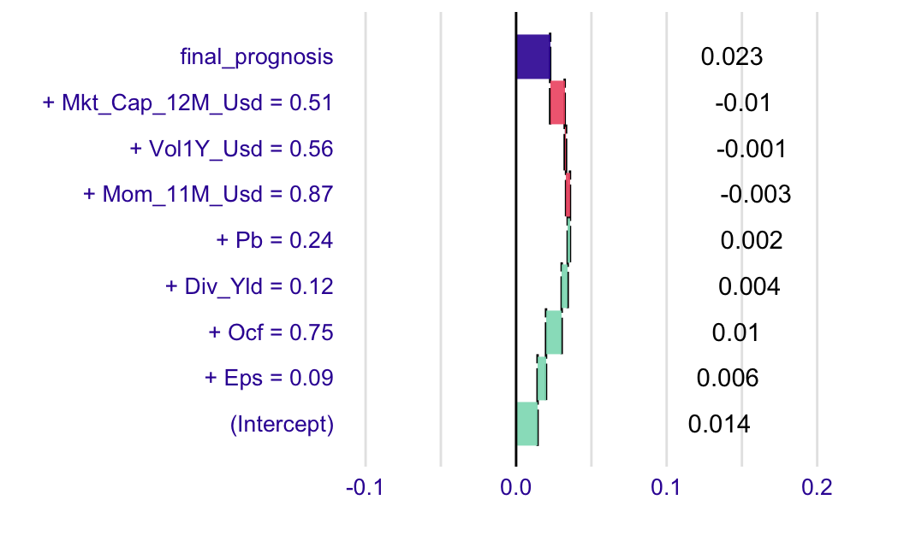

13 可解释性
本章专门介绍有助于理解模型将输入处理为输出的方式的技术。最近的两本书（Molnar (2019)，可在 https://christophm.github.io/interpretable-ml-book/ 上找到，Biecek and Burzykowski (2021)，可在 https://ema.drwhy.ai 上找到）完全致力于此主题，我们强烈建议您看一下。 Belle and Papantonis (2020) 的调查也是值得的。另一个更具介绍性和较少技术性的参考是 Patrick Hall and Gill (2019)。 显然，在本章中，我们将采用以因子投资为导向的基调，并讨论与在金融数据集上训练的ML模型相关的示例。
旨在解释 ML 模型的定量工具需要满足两个简单的条件：
- 它们提供有关模型的信息.
- 它们非常容易理解。
通常，这些工具会生成易于阅读并立即得出结论的图形输出。
在尝试对复杂的ML模型进行白盒化时，存在一种二分法：
- 一旦模型训练完毕，全局模型 就会寻求确定特征在预测构建中的相对作用。这是在全局级别完成的，以便解释中显示的模式在整个训练集上平均而言保持成立。
- 局部模型 旨在通过考虑该实例周围的微小变化来描述模型在该特定实例周围的行为方式。原始模型处理这些变化的方式允许通过近似（例如以线性方式）来简化它。例如，该近似可以确定原始实例附近的每个相关特征的影响的符号和大小。
Molnar (2019) 通过将依赖于一个特定模型（例如线性回归或决策树）的解释与可以从任何类型的模型获得的解释分开来提出可解释性解决方案的另一种分类。在下文中，我们根据全局与局部二分法提出方法。
除了下面介绍的传统方法之外，我们希望重点介绍另外两种方法：Sirus (Bénard et al. (2021)) 和 Rulefit (J. H. Friedman and Popescu (2008))。两者都是在 R 中实现的。
13.1 全局解释
13.1.1 简单模型作为代理
让我们从最简单的例子开始。在线性模型中， \[y_i=\alpha+\sum_{k=1}^K\beta_kx_i^k+\epsilon_i,\] 通常从 \(\beta_k\) 的估计中提取以下元素：
- \(R^2\)，它评估模型的 全局拟合（可能会受到惩罚，以防止与许多回归器过度拟合）。 \(R^2\) 通常在样本中计算；
- 估计值 \(\hat{\beta}_k\) 的符号，表示每个特征 \(x^k\) 对 \(y\) 的影响的 方向；
- \(t\)-统计量 \(t_{\hat{\beta_k}}\)，评估这种影响的 大小：无论其方向如何，绝对值较大的统计量都揭示了重要变量。通常，\(t\) 统计量会转换为 \(p\) 值，这些值是在一些合适的分布假设下计算的。
最后两个指标非常有用，因为它们告知用户哪些特征最重要以及每个预测变量的效果的符号。这提供了模型如何将特征处理为输出的简化视图。大多数旨在解释黑匣子的工具都遵循相同的原则。
决策树由于易于描绘，因此也是可解释性的绝佳模型。由于这一优点，它们成为简单模型的目标基准。最近，Vidal, Pacheco, and Schiffer (2020) 提出了一种将树集合简化为唯一树的方法。目的是提出一种更简单的模型，其行为与复杂模型完全相同。
更一般地说，采用简单模型来代理更复杂的算法是一个直观的想法。一种简单的方法是构建所谓的 代理 模型。过程很简单：
- 在特征 \(\textbf{X}\) 和标签 \(\textbf{y}\);
上训练原始模型 \(f\) - 训练一个更简单的模型 \(g\) 来解释给定特征 \(\textbf{X}\) 的训练模型 \(\hat{f}\) 的预测： \[\hat{f}(\textbf{X})=g(\textbf{X})+\textbf{error}\]
估计模型 \(\hat{g}\) 解释了初始模型 \(\hat{f}\) 如何将特征映射到标签中。为了说明这一点，我们使用 IML 包（请参阅 Molnar, Casalicchio, and Bischl (2018)）。更简单的模型是深度为 2 的树。
library(iml)
mod <- Predictor$new(fit_RF,
data = training_sample %>% dplyr::select(features))
dt <- TreeSurrogate$new(mod, maxdepth = 2)
plot(dt)
图 13.1：代理树示例。
与第 6 章中看到的树的表示形式不同。事实上，四种可能的结果（由顶行的条件决定）不再产生简单的值（标签的平均值），而是以箱线图的形式给出更多信息（包括四分位数范围和异常值）。在上面的表示中，右上角的聚类似乎具有最高的奖励，尤其是有很多向上的异常值。该聚类由过去收益率不稳定的小公司组成。
13.1.2 特征重要性（基于树）
简单决策树的一个令人难以置信的有利特征是它们的可解释性。他们的视觉表现清晰而直接。就像回归（ML中的另一个构建块）一样，简单的树很容易理解，并且不会受到通常与更复杂的工具相关的黑盒谴责。
事实上，随机森林和提升树都无法完全准确地描述引擎内部发生的情况。相反，一旦经过训练，就可以计算每个特征在确定树结构中的总份额（或重要性）。
训练后，可以在每个节点 \(n\) 计算后续分割获得的增益 \(G(n)\) （如果有的话），即如果该节点不是终端叶子。确定选择哪个变量来执行分割也很容易，因此我们将 \(\mathcal{N}_k\) 写为为分区选择特征 \(k\) 的节点集。然后，每个特征的全局重要性由下式给出 \[I(k)=\sum_{n\in \mathcal{N}_k}G(n),\] 并且它经常被重新调整，以便所有 \(k\) 的 \(I(k)\) 之和等于 1。在这种情况下，\(I(k)\) 衡量特征 \(k\) 在训练期间减少损失方面的相对贡献。重要度高的变量对预测的影响更大。一般来说，这些变量是那些靠近树根的变量。
下面，我们看一下在6章中训练的基于树的模型获得的结果。我们首先回收我们使用的三个回归模型的输出。请注意，每个拟合输出都有自己的结构，并且重要性向量有不同的名称。
tree_VI <- fit_tree$variable.importance %>% # VI from tree model
as_tibble(rownames = NA) %>% # Transform in tibble
rownames_to_column("Feature") # Add feature column
RF_VI <- fit_RF$importance %>% # VI from random forest
as_tibble(rownames = NA) %>% # Transform in tibble
rownames_to_column("Feature") # Add feature column
XGB_VI <- xgb.importance(model = fit_xgb)[,1:2] # VI from boosted trees
VI_trees <- tree_VI %>% left_join(RF_VI) %>% left_join(XGB_VI) # Aggregate the VIs
colnames(VI_trees)[2:4] <- c("Tree", "RF", "XGB") # New column names
norm_1 <- function(x){return(x / sum(x))} # Normalizing function
VI_trees %>% na.omit %>% mutate_if(is.numeric, norm_1) %>% # Plotting sequence
gather(key = model, value = value, -Feature) %>%
ggplot(aes(x = Feature, y = value, fill = model)) + geom_col(position = "dodge") +
theme(axis.text.x = element_text(angle = 35, hjust = 1))
图 13.2：基于树的模型的特征重要性。
在上面的代码中，tibbles 就像数据帧（可以这么说，它们是数据帧的 v2.0）。 鉴于该图的编码方式，图 13.2 实际上具有误导性。事实上，通过构造，简单的树模型仅具有少量非零重要性的特征：在上图中，只有 3 个：资本化、市净率和波动性。相比之下，由于随机森林和提升树要复杂得多，因此它们对许多预测变量具有一定的重要性。该图仅显示与简单树模型相关的变量。出于规模原因，执行归一化 之后 选择特征子集。出于明显的可读性考虑，我们倾向于限制图表上显示的特征数量。
模型依赖特征的方式存在差异。例如，最重要的特征从一个模型变为另一个模型：简单树模型最重视市净率，而随机森林则更多地关注波动性，而提升树模型则更重视资本化。
随机森林的一个定义属性是它们为所有特征提供了机会。事实上，通过随机选择预测变量，每个单独的外生变量都有机会解释标签。与将大部分鸡蛋放在几个篮子里的简单树相比，与提升树一起，预测变量之间的重要性分配更加平衡。
13.1.3 特征重要性（模型无关）
量化学习过程中每个特征的重要性的想法可以扩展到非基于树的模型。我们参考 Fisher, Rudin, and Dominici (2019) 的研究中提到的论文，以获取有关该文献流的更多信息。前提与上面相同：目的是量化一个特征对学习过程的贡献程度。
跟踪某个特定特征的附加值的一种方法是查看如果训练集中的值完全打乱会发生什么情况。如果原始特征在因变量的解释中起着重要作用，那么特征的改组版本将导致更高的损失。
一般情况下评估特征重要性的基线方法如下：
- 在原始数据上训练模型并计算相关损失 \(l^*\).
- 对于每个特征 \(k\)，创建一个新的训练数据集，其中特征的值被随机排列。然后，根据这个改变的样本评估模型的损失 \(l_k\)
- 对每个特征的特征重要性进行排名，计算为差值 \(\text{VI}_k=l_k-l^*\) 或比率 \(\text{VI}_k=l_k/l^*\)。
是否计算训练集或测试集的损失是一个悬而未决的问题，仍有待分析师评估。
上述过程当然是随机的，并且可以重复，以便在多次试验中对重要性进行平均：这提高了结果的稳定性。该算法在Molnar (2019)作者开发的IML R包的FeatureImp()函数中实现。我们还推荐 VIP 软件包，请参阅 Greenwell and Boehmke (Forthcoming).
下面，我们手动实现该算法，目标是处理图 13.2 中出现的特征。我们在岭回归上测试这种方法，并回收第 5 章中使用的变量。我们从第一步开始：计算原始训练样本的损失。
fit_ridge_0 <- glmnet(x_penalized_train, y_penalized_train, # Trained model
alpha = 0, lambda = 0.01)
l_star <- mean((y_penalized_train-predict(fit_ridge_0, x_penalized_train))^2) # Loss接下来，我们评估每个预测变量被顺序打乱时的损失。为了减少计算时间，我们只进行一轮洗牌。
l <- c() # Initialize
for(i in 1:nrow(VI_trees)){ # Loop on the features
feat_name <- as.character(VI_trees[i,1])
temp_data <- training_sample %>% dplyr::select(features) # Temp feature matrix
temp_data[, which(colnames(temp_data) == feat_name)] <- # Shuffles the values
sample(temp_data[, which(colnames(temp_data) == feat_name)]
%>% pull(1), replace = FALSE)
x_penalized_temp <- temp_data %>% as.matrix() # Predictors into matrix
l[i] <- mean((y_penalized_train-predict(fit_ridge_0, x_penalized_temp))^2) # = Loss
}最后，我们绘制结果。
data.frame(Feature = VI_trees[,1], loss = l - l_star) %>%
ggplot(aes(x = Feature, y = loss)) + geom_col() +
theme(axis.text.x = element_text(angle = 35, hjust = 1))
图 13.3：岭回归模型的特征重要性。
由此产生的重要性与基于树的模型的重要性一致：最突出的变量是基于波动性、基于市值和市净率；这些与图 13.2 中的变量非常匹配。请注意，在某些情况下（例如，股票换手率），分数甚至可能为负，这意味着当预测变量的值被打乱时，预测比基线模型更准确！
13.1.4 部分依赖图
部分依赖图 (PDP) 旨在显示模型输出与特征值之间的关系（我们参考 J. H. Friedman (2001) 的第 8.2 节来了解该主题的早期处理）。
固定一个特征 \(k\)。我们想要了解 \(k\) 对训练模型 \(\hat{f}\) 预测的 平均影响。为此，我们假设特征空间是随机的，并将其分为两部分：\(k\) 与 \(-k\)，它代表除 \(k\) 之外的所有特征。部分依赖图定义为
\[\begin{equation} \tag{13.1} \bar{f}_k(x_k)=\mathbb{E}[\hat{f}(\textbf{x}_{-k},x_k)]=\int \hat{f}(\textbf{x}_{-k},x_k)d\mathbb{P}_{-k}(\textbf{x}_{-k}), \end{equation}\]
，其中 \(d\mathbb{P}_{-k}(\cdot)\) 是非 \(k\) 特征 \(\textbf{x}_{-k}\) 的（多元）分布。上面的函数将特征值 \(x_k\) 作为参数，并通过样本分布冻结所有其他特征：这仅显示了特征 \(k\) 的影响。在实践中，平均值是使用蒙特卡罗模拟来评估的：
\[\begin{equation} \tag{13.2} \bar{f}_k(x_k)\approx \frac{1}{M}\sum_{m=1}^M\hat{f}\left(x_k,\textbf{x}_{-k}^{(m)}\right), \end{equation}\] 其中 \(\textbf{x}_{-k}^{(m)}\) 是非 \(k\) 特征的独立样本。
理论上，一次可以针对多个特征计算 PDP。实际上，这仅适用于两个特征（产生 3D 表面），并且计算量更大。
我们在下面使用专用包 IML （可解释的ML）来说明这个概念；另请参阅 Greenwell (2017) 中记录的 pdp 包。我们试图解释的模型是在 6.2 节中构建的随机森林。我们回收其中使用的一些变量。我们选择测试市净率对模型结果的影响。
library(iml) # One package for interpretability
mod_iml <- Predictor$new(fit_RF, # This line encapsulates the objects
data = training_sample %>% dplyr::select(features))
pdp_PB = FeatureEffect$new(mod_iml, feature = "Pb") # This line computes the PDP for p/b ratio
plot(pdp_PB) # Plot the partial dependence.
图 13.4：随机森林模型市净率的部分依赖图。
市净率对预测的平均影响正在下降。考虑到因变量的条件平均值以及市净率，这在某种程度上是预料之中的。后一个函数如图 6.3 所示，并显示出与上述曲线相当的行为：P/B 值较小时急剧下降，然后相对平坦。当市净率较低时，公司被低估。因此，它们的较高收益率与 价值 溢价一致。
最后，我们参考 Q. Zhao and Hastie (2020) 对 PDP 的 因果性 属性进行理论讨论。事实上，深入研究 PDP 的构造表明，它们可以被解释为模型输出特征的因果表示。
13.2 局部解释
全局解释试图评估特征对输出 \(overall\) 的影响，而局部方法则尝试量化模型在特定实例或其邻域上的行为。局部可解释性最近受到关注，并且已经发表了许多关于该主题的论文。下面，我们概述了最广泛的方法。27
13.2.1 LIME
LIME（Local Interpretable Model-Agnostic Explanations）是一种最初由 Ribeiro, Singh, and Guestrin (2016) 提出的方法。他们的目标是提供 在两个约束下忠实地描述模型：
- 简单可解释性，这意味着具有视觉或文本表示的有限数量的变量。这是为了确保任何人都能轻松理解该工具的结果；
- 局部忠实度：该解释适用于实例附近。
原始（黑盒）模型是 \(f\)，我们假设我们希望使用可解释模型 \(g\) 来近似其围绕实例 \(x\) 的行为。简单函数 \(g\) 属于更大的类 \(G\)。 \(x\) 的附近标记为 \(\pi_x\)，\(g\) 的复杂度标记为 \(\Omega(g)\)。 LIME 寻求对表格的解释 \[\xi(x)=\underset{g \in G}{\text{argmin}} \, \mathcal{L}(f,g,\pi_x)+\Omega(g),\] 其中 \(\mathcal{L}(f,g,\pi_x)\) 是 \(g\) 在 \(x\) 的 \(\pi_x\) 附近引起的损失函数（误差/不精确）。惩罚 \(\Omega(g)\) 是例如叶子的数量或树的深度，或者线性回归中的预测变量的数量。
现在需要定义上述一些术语。 \(x\) 的附近由 \(\pi_x(z)=e^{-D(x,z)^2/\sigma^2},\) 定义，其中 \(D\) 是某个距离度量，\(\sigma^2\) 是某个缩放常数。我们强调，当 \(z\) 远离 \(x\) 时，该函数会减弱。
棘手的部分是损失函数。为了最小化它，LIME 生成接近 \(x\) 的人工样本，并对简单表示产生的标签上的误差进行平均/求和。为简单起见，我们假设 \(f\) 为标量输出，因此公式如下： \[\mathcal{L}(f,g,\pi_x)=\sum_z \pi_x(z)(f(z)-g(z))^2\] 并且根据与初始实例 \(x\) 的距离对误差进行加权：最近的点获得最大的权重。在其最基本的实现中，模型集 \(G\) 由所有线性模型组成。
在图 13.5 中，我们提供了 LIME 工作原理的简化图。

图 13.5：LIME 的简单解释：解释的实例被红色方块包围。生成五个点（三角形）并相应地拟合加权线性模型（灰色虚线）。
为了说明清楚，我们仅使用一个因变量。原始训练样本用黑点显示。拟合（训练过的）模型用蓝线（平滑条件平均值）表示，我们想要近似模型如何围绕一个特定实例工作，该实例由周围的红色方块突出显示。为了构建近似值，我们在实例周围采样 5 个新点（5 个红色三角形）。每个三角形都位于蓝线上（它们是模型预测），并且具有与其大小成比例的权重：最接近实例的三角形具有更大的权重。使用加权最小二乘法，我们构建了一个适合这 5 个点（灰色虚线）的线性模型。这就是近似的结果。它给出了模型的两个参数：截距和斜率。两者都可以通过标准统计测试进行评估。
斜坡的标志很重要。很明显，如果实例更接近 \(x=0\)，斜率可能几乎是平坦的，因此预测器可能会被局部丢弃。另一个重要的细节是样本点的数量。在我们的解释中，我们只取五个点，但实际上，稳健的估计通常需要大约一千个点或更多。事实上，当采样的邻居太少时，估计风险很高并且近似可能很粗糙。
我们继续看一个实施示例。有几个步骤：
- 在一些训练数据上拟合模型.
- 使用 Lime() 函数包装所有内容。
- 关注一些预测变量并查看它们对一些特定实例的影响（通过explain()函数）。
我们从第一步开始。这次，我们使用提升树模型。
library(lime) # Package for LIME interpretation
params_xgb <- list( # Parameters of the boosted tree
max_depth = 5, # Max depth of each tree
eta = 0.5, # Learning rate
gamma = 0.1, # Penalization
colsample_bytree = 1, # Proportion of predictors to be sampled (1 = all)
min_child_weight = 10, # Min number of instances in each node
subsample = 1) # Proportion of instance to be sampled (1 = all)
xgb_model <- xgb.train(params_xgb, # Training of the model
train_matrix_xgb, # Training data
nrounds = 10) # Number of trees然后，我们继续第二步和第三步。正如上面强调的，我们求助于 Lime() 和explain() 函数。
explainer <- lime(training_sample %>% dplyr::select(features_short), xgb_model) # Step 2.
explanation <- explain(x = training_sample %>% # Step 3.
dplyr::select(features_short) %>%
dplyr::slice(1:2), # First two instances in train_sample
explainer = explainer, # Explainer variable created above
n_permutations = 900, # Nb samples for loss function
dist_fun = "euclidean", # Dist.func. "gower" is one alternative
n_features = 6 # Nb of features shown (important ones)
)
plot_features(explanation, ncol = 1) # Visual display
在每张图中（一张图对应一个实例的说明），有两种类型的信息：影响的符号和影响的大小。符号用颜色显示（正为蓝色，负为红色），大小用矩形的大小显示。
图表左侧的值显示用于计算局部近似值的特征的范围。
最后，我们简要讨论代码中距离函数的选择。它用于评估真实实例与模拟实例之间的差异，以或多或少地赋予采样实例的预测权重。我们的数据集仅包含数值数据；因此，欧几里德距离是一个自然的选择：
\[\text{Euclidean}(\textbf{x}, \textbf{y})=\sqrt{\sum_{n=1}^N(x_n-y_n)^2}.\] 另一种可能的选择是曼哈顿距离： \[\text{Manhattan}(\textbf{x}, \textbf{y})=\sum_{n=1}^N|x_n-y_n|.\]
这两个距离的问题在于它们无法处理分类变量。这就是高尔距离介入的地方 (Gower (1971))。距离对不同类型的特征施加不同的处理（本质上是类与数字，但它也可以处理丢失的数据！）。对于分类特征，Gower 距离采用二元处理：如果特征相等，则该值等于 1，如果不相等，则该值等于 0（即 \(1_{\{x_n=y_n\}}\)）。对于数值特征，分布被量化为 \(1-\frac{|x_n-y_n|}{R_n}\)，其中 \(R_n\) 是特征可以采用的最大绝对值。然后汇总所有相似性测量结果以得出最终分数。请注意，在这种情况下，逻辑是相反的：如果高尔距离接近 1，则 \(\textbf{x}\) 和 \(\textbf{y}\) 非常接近；如果距离接近 0，则它们很远。
13.2.2 沙普利值
Shapley 值的方法与 LIME 相比有些不同，但在精神上更接近 PDP。它起源于合作博弈论（Shapley (1953)）。理由如下。评估变量影响（或有用性）的一种方法是看看如果我们从数据集中删除该变量会发生什么。如果这对模型的质量（即预测的准确性）非常不利，则意味着该变量非常有价值。
Shapley 值已用于归因 Shalit (2020)、Shalit (2020) 和 Moehle, Boyd, and Ang (2021) 中投资组合的风险或绩效。
从数字上看，最简单的方法是采用所有变量并删除一个变量来评估其预测能力。 Shapley 值的计算规模更大，因为它们考虑了添加目标预测变量的所有可能的变量组合。形式上，这给出：
\[\begin{equation} \tag{13.3} \phi_k=\sum_{S \subseteq \{x_1,\dots,x_K \} \backslash x_k}\underbrace{\frac{\text{Card}(S)!(K-\text{Card}(S)-1)!}{K!}}_{\text{weight of coalition}}\underbrace{\left(\hat{f}_{S \cup \{x_k\}}(S \cup \{x_k\})-\hat{f}_S(S)\right)}_{\text{gain when adding } x_k} \end{equation}\]
\(S\) 是不包括特征 \(k\) 的任何子集，其大小为 Card(\(S\)).在上面的等式中，必须更改模型 \(f\)，因为当特征缺失时无法评估 \(f\)。在这种情况下，有几种可能的选择：
显然，如果预测变量的数量很大，则 Shapley 值可能需要花费大量时间来计算。我们参考 J. Chen et al. (2018) 来讨论在这种情况下减少计算时间的简化方法。 Lundberg and Lee (2017) 中研究了可解释性的 Shapley 值的扩展。
R 中允许通过 IML 包实现 Shapley 值。与 LIME 相比有两个限制。首先，必须预先过滤特征，因为所有特征都显示在图表上（超过 20 个特征就会变得难以辨认）。这就是为什么在下面的代码中，我们使用预测变量的简短列表（来自 1.2 节）。 其次，一次分析一个实例。
我们首先拟合随机森林模型。
fit_RF_short <- randomForest(R1M_Usd ~., # Same formula as for simple trees!
data = training_sample %>% dplyr::select(c(features_short), "R1M_Usd"),
sampsize = 10000, # Size of (random) sample for each tree
replace = FALSE, # Is the sampling done with replacement?
nodesize = 250, # Minimum size of terminal cluster
ntree = 40, # Nb of random trees
mtry = 4 # Nb of predictive variables for each tree
)然后，我们可以分析模型在训练样本的第一个实例周围的行为。
predictor <- Predictor$new(fit_RF_short, # This wraps the model & data
data = training_sample %>% dplyr::select(features_short),
y = training_sample$R1M_Usd)
shapley <- Shapley$new(predictor, # Compute the Shapley values...
x.interest = training_sample %>%
dplyr::select(features_short) %>%
dplyr::slice(1)) # On the first instance
plot(shapley) + coord_fixed(1500) + # Plot
theme(axis.text.x = element_text(angle = 35, hjust = 1)) + coord_flip() 
图 13.6：Shapley 方法图解。
在图 13.6 所示的输出中，我们再次获得两个关键的见解：特征影响的 符号 和 相对重要性 （与其他特征相比）。
13.2.3 分解法
分解法（参见例如 Staniak and Biecek (2018)）是 PDP 和 Shapley 值思想的混合。分解法的核心是方程 (13.4) 中定义的所谓 松弛模型预测。它在本质上与方程 (13.1) 很接近。不同之处在于，我们是在局部层面开展工作，即针对一项特定观察，例如 \(x^*\)。我们想要衡量一组预测变量对与 \(x^*\) 相关的预测的影响；因此，我们固定两个集合\(\textbf{k}\)（固定特征）和\(-\textbf{k}\)（自由特征），并在预测变量集合\(\textbf{k}\)固定为\(x^*\)的值时评估估计模型\(\hat{f}\)的平均预测替代量，即等于下面表达式中的\(x^*_{\textbf{k}}\)：
\[\begin{equation} \tag{13.4} \tilde{f}_{\textbf{k}}(x^*)=\frac{1}{M}\sum_{m=1}^M \hat{f}\left(x^{(m)}_{-\textbf{k}},x^*_{\textbf{k}} \right). \end{equation}\]
上面表达式中的\(x^{(m)}\)是模拟值实例或只是从数据集中采样的值。该符号意味着该实例的一些值被 \(x^*\) 的值替换，即那些对应于索引 \(\textbf{k}\) 的值。当\(\textbf{k}\)由所有特征组成时，\(\tilde{f}_{\textbf{k}}(x^*)\)等于原始模型预测\(\hat{f}(x^*)\)，当\(\textbf{k}\)为空时，它等于标签的平均样本值（恒定预测）。
感兴趣的量是特征 \(j\notin \textbf{k}\) 对数据点 \(x^*\) 和集合 \(\textbf{k}\) 的所谓贡献：
\[\phi_{\textbf{k}}^j(x^*)=\tilde{f}_{\textbf{k} \cup j}(x^*)-\tilde{f}_{\textbf{k}}(x^*).\]
正如 Shapley 值一样，上述指标计算使用特征 \(j\) 增强预测变量集时的平均影响。根据定义，它取决于集合 \(\textbf{k}\)，因此这是与 Shapley 值（跨越 全部 排列）的一个显着差异。在 Staniak and Biecek (2018) 中，作者设计了一个逐渐增加或减少集合 \(\textbf{k}\) 的过程。这种贪婪的想法有助于减轻计算所有可能的特征组合的负担。此外，他们的算法的一个非常方便的属性是所有贡献的总和等于预测值： \[\sum_j \phi_{\textbf{k}}^j(x^*)=f(x^*).\]
可视化使其非常容易看到（如下图 13.7 所示）。
为了说明分解法的一种实现，我们在有限数量的特征上训练随机森林，如下所示。这将提高分解输出的可读性。
formula_short <- paste("R1M_Usd ~", paste(features_short, collapse = " + ")) # Model
formula_short <- as.formula(formula_short) # Formula format
fit_RF_short <- randomForest(formula_short, # Same formula as before
data = dplyr::select(training_sample, c(features_short, "R1M_Usd")),
sampsize = 10000, # Size of (random) sample for each tree
replace = FALSE, # Is the sampling done with replacement?
nodesize = 250, # Minimum size of terminal cluster
ntree = 12, # Nb of random trees
mtry = 5 # Nb of predictive variables for each tree
)模型训练完成后，预测分解的语法就非常简单。
library(breakDown)
explain_break <- broken(fit_RF_short,
data_ml[6,] %>% dplyr::select(features_short),
data = data_ml %>% dplyr::select(features_short))
plot(explain_break) 
图 13.7：分解法输出示例。
图形输出可以直观地解释。灰色条是模型在所选实例上的预测。绿色条表示积极贡献，黄色矩形表示具有负面影响的变量。相对大小表明每个特征的重要性。